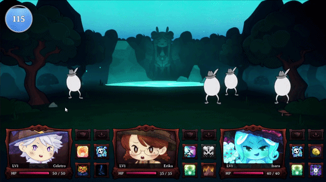

Projeto Maguitos
Game & Systems Designer / Gameplay Programmer (two-person team)
You play a caretaker at a magical daycare who cannot cast even the simplest spell. On your first day almost every child in your care vanishes into the Cursed Forest, and as a coward with no magic your only way out is to let the toddlers themselves fight for you.

01
The hook
What
A roguelite of back to back encounters. Survive a fixed number of battles, rescue toddlers, swap your party, and reach the boss intact.
Why
The premise, a coward who outsources combat to the kids, is the loop itself. Every choice is "who do I send to fight for me," which justifies constant party turnover without a tutorial.
02
Core loop and the toddler swap
What
Combat, then swap one toddler for one from a pool of three, then grow stronger, then combat again. Toddlers do not level up by fighting. You get stronger by swapping, not grinding.
Why
Removing XP leveling forces attachment to break. The toddler that saved you in stage two is currency for a stronger one in stage four. Progression is a run of painful choices, not a number that climbs on its own.
04
Technical core: enemy AI
Enemies do not run a fixed behavior tree. Each one builds its list of legal actions, scores every one, and picks by weighted random. The system is built so that difficulty is not just bigger HP and damage, it is enemies that see more of the board and misplay less.
4a
Action equals skill plus target
What
The unit of decision is not the skill, it is the pair (skill, target). The enemy generates every legal action (skill by valid target), filters out the useless ones (no charge, no living target, target immune by tag, zero effect), and scores what remains.
Why
A damage skill only means something relative to who it hits. Binding skill and target from the ground up lets the AI reason about consequence, "this skill on this target is a kill," instead of choosing skill and target in separate, dumber steps.
4b
Enemy resource: charges, not MP
What
Enemies have no MP and no pool. Their resource is charges per skill: each skill has a number of uses and a recharge time. The basic attack has infinite charges.
Why
It paces the strong skills. The player learns to count the window, "his heavy hit is back in two turns," and the enemy cannot spam its best move forever. It is a hidden resource with no UI, because the read is about the pattern, not a number on screen.
4c
Decide early, execute late, hidden
What
At the start of the round each enemy locks its action, with no telegraph. It only executes after the player resolves the party's turn. There is no re-routing based on what the party did. The one exception is re-targeting: if the locked target died or left, the hit redirects to the nearest valid target.
Why
The AI commits to the state at the start of the round. That is what makes Defend and Heal worth using: the enemy already chose to hit your fragile toddler before you shielded it, so shielding actually saves it. If the AI reacted to your turn, preemptive defense would be useless.
4d
Intelligence is not Conviction
What
Two orthogonal channels drive the AI. Intelligence (ai_intelligence) scales the situational weight, so it defines what the enemy prefers: hit the vulnerable, avoid overkill, finish kills. Conviction (ai_conviction) is the exponent of the draw, P(action) = weight^conviction / sum of weight^conviction, so it defines only how faithfully the enemy follows its own preference. Conviction of zero is a uniform draw and plays erratic, high conviction almost always takes the top pick.
P(action) = weight^conviction / sum of weight^conviction
Why
Splitting these two was the most important design decision in the AI, and they look identical but are not. A genius with conviction zero draws at random and plays like an idiot. A fool with high conviction executes the dumbest possible preference with total fidelity. If conviction were intelligence, that could not happen. Intelligence is what the enemy wants, conviction is how much it obeys itself, and it is the main difficulty dial.
4e
Intent board: group coordination
What
A board shared per round. Enemies decide in sequence, and on locking an action each one records its target and expected damage. The enemies that decide after read effective HP, which is current HP minus damage already allocated, before they score.
Why
Without coordinating, several enemies all pick the same weak toddler and burn several actions for one kill. With the board, the second enemy sees the target as already dead, the "likely kill" bonus disappears, "overkill" penalizes, and it redirects on its own. It is emergent group coordination with no team AI written. And it respects intelligence: a dumb enemy ignores the board and hits the corpse, a smart one respects it.
4f
Personalities by archetype
What
Each enemy draws a personality from its archetype's pool (Hot-headed, Clever, Gentle, Coward). Each one is a weight bias by skill tag (aggressive, defensive, support, and so on), and it is legible: change the behavior and you change the name, icon, and color.
Why
Biasing by tag rather than by skill means a new skill only has to mark its tags to work with every personality. And high conviction on a strong-personality enemy does not make it smarter, it makes it more stubborn: it commits harder to its own irrational bias. Personality is flavor, not intelligence.
05
Design maturity: why "role" died
What
The old system tagged every unit with a fixed role, tank, dps, or support. It was ripped out and replaced by key stats read from the real numbers (primary_stat and secondary_stat) plus a tier tiebreaker.
Why
The role lied. Celetro was tagged tank while holding the highest Witness in the party. Isara was dps by default, when what actually defines her is MP Regen, 2.5 times the others. A label kept apart from the numbers always drifts from them. Removing the tag and letting the AI read what a unit actually is fixed a dead rule for free, buffs finally landing on the right target.

06
Architecture: polymorphic scoring
What
Each skill type carries its own estimator and score (ai_estimate and ai_score), with a damage default on the base class. Heal, buff, and DoT override it. A new skill or exception never touches the central scorer, the same pattern as the game's resolve().
Why
It keeps the AI extensible without becoming one giant if statement. Adding a combat mechanic means adding a subclass, not editing the AI's brain.
07
Status and next steps
Phase 1, the AI MVP, and Phase 2, the intent board, personalities, and the two intelligence channels, are implemented and verified in-editor. Phase 3 is open: archetypes beyond the first roster, a tuning overlay to lock the values in playtest, and bosses with triggers and phases layered over the weight system.